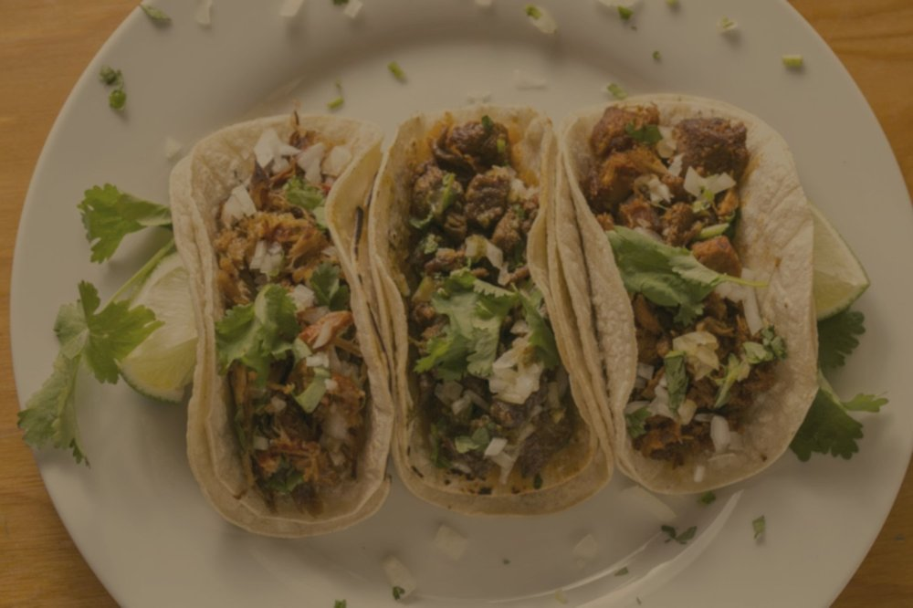
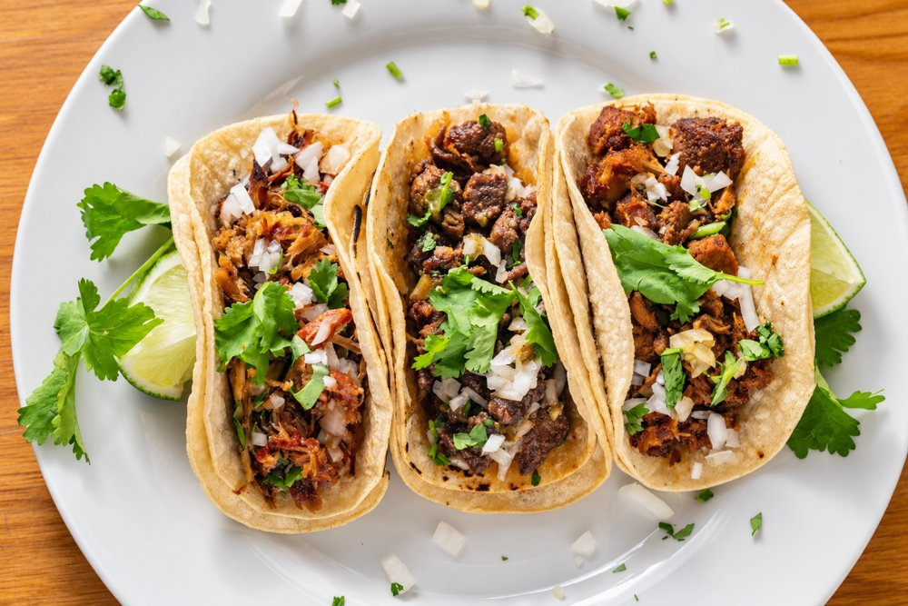
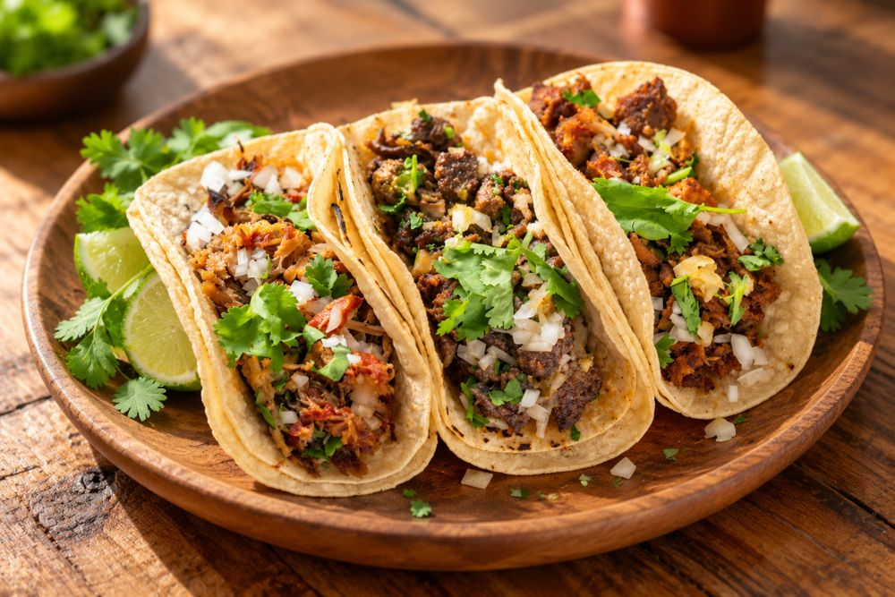

Mejora la foto de tu platillo con IA (paso a paso)
A veces tienes una buena foto de tu platillo, pero salió oscura o con un tono amarillento. La IA puede ayudarte a corregirla: es la misma comida, con mejor luz y colores más naturales. En este video te mostramos cómo hacerlo con ChatGPT, paso a paso.
Los pasos
- Abre ChatGPT en tu cuenta y empieza un chat nuevo. Sube la foto de tu platillo.
- Pega el prompt (más abajo) y envíalo.
- Espera unos segundos a que ChatGPT termine la imagen.
- Compara el antes y el después.


Segundo ejemplo
En el mismo chat puedes pedir algo más: los mismos tacos en un plato de madera y desde un mejor ángulo. Usa el segundo prompt, sin subir la foto otra vez.

Consejos
- Sé específico y claro desde el principio. Di qué quieres mejorar y qué debe quedarse igual.
- No edites la misma foto una y otra vez. Si lo haces, la IA puede cambiar cosas y la calidad puede bajar. Por eso conviene ser claro desde el inicio.
- Regla de oro: mejora la foto, nunca la comida. No agregues ni quites ingredientes.
- Revisa que el resultado coincida con lo que el cliente va a recibir.
Prompts para copiar
Prompt 1: mejorar la luz y el color
Edita esta foto de comida para redes sociales. Mantén exactamente los mismos tacos, plato y composición: no cambies ni agregues comida. Mejora la luz, corrige el tono amarillo para que los colores se vean naturales y frescos, hazla más nítida y apetitosa, y que se vea realista.
Prompt 2: plato de madera y mejor ángulo
Ahora pon los mismos tacos en un plato redondo de madera sobre una mesa rústica de madera, y muéstralos desde un mejor ángulo: vista de tres cuartos a 45 grados, fondo desenfocado y luz natural cálida de ventana. Mantén los mismos tacos y la misma guarnición, y que se vea realista.
¿Quieres seguir aprendiendo?
Únete al grupo de Facebook Exnar AI para Restaurantes, o agenda una consulta. Se habla español.
Descarga gratis nuestros kits de IA para restaurantes: prompts, rutinas y plantillas.
Improve your dish photo with AI (step by step)
Sometimes you have a good photo of a dish, but it came out dark or with a yellow tint. AI can help fix it: it is the same food, with better light and more natural colors. The video above (in Spanish) shows how to do it with ChatGPT, step by step.
The steps
- Open ChatGPT in your account and start a new chat. Upload your dish photo.
- Paste the prompt (below) and send it.
- Wait a few seconds while ChatGPT finishes the image.
- Compare the before and after.
Second example
In the same chat you can ask for more: the same tacos on a wooden plate, from a better angle. Use the second prompt, with no need to upload the photo again.
Tips
- Be specific and clear from the start. Say what you want to improve and what must stay the same.
- Don't edit the same photo again and again. If you do, the AI can change things and the quality can drop. That is why it helps to be clear from the beginning.
- Golden rule: improve the photo, never the food. Don't add or remove ingredients.
- Check that the result matches what the customer will actually receive.
Prompts to copy
Prompt 1: better light and color
Edit this restaurant food photo for social media. Keep the exact same tacos, plate and layout - do not change or add any food. Brighten the lighting, fix the yellow color cast so the colors look natural and fresh, make it sharper and more appetizing, and keep it realistic.
Prompt 2: wooden plate and a better angle
Now put the same tacos on a round wooden plate on a rustic wooden table, and show them from a better point of view: a 45-degree three-quarter angle with a soft blurred background and warm natural window light. Keep the same tacos and toppings, and keep it realistic.
Want to keep learning?
Join the Facebook group Exnar AI para Restaurantes, or book a consultation. Se habla español.
Download our AI kits for restaurants for free: prompts, routines and templates.